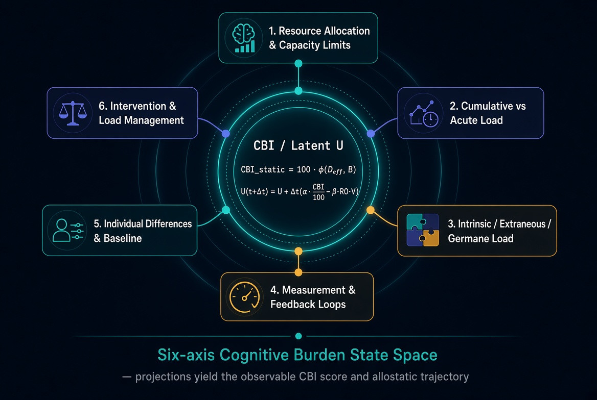

Updated Mathematical Model
Transparent exploratory equations for the expanded CBI. Every term is adjustable in the calculator. This is a hypothetical personal model for visualization — not a validated clinical instrument.
1. Inputs (all normalized to $[0,1]$)
$TS$ task switching · $WM$ working memory · $TP$ time pressure · $ID$ interruption density · $EL$ emotional load · $CT$ low controllability · $SL$ sleep disruption · $SS$ low social support · $RO$ recovery opportunity · $RD = 1 - RO$.
Optional Big Five sensitivities $O,C,E,A,N \in [0,1]$ retune weights only; they are not disease scores.
2. Personality-adjusted weights
Base weights $w^0$ sum to 1. Personality adjustments are applied as:
$$ \begin{aligned} w_{EL} &= w^{0}_{EL} + 0.096(N-0.5)\\ w_{SL} &= w^{0}_{SL} + 0.08(N-0.5)\\ w_{CT} &= w^{0}_{CT} + 0.08(N-0.5)\\ w_{RD} &= w^{0}_{RD} + 0.064(N-0.5)\\ w_{ID} &= w^{0}_{ID} - 0.04(E-0.5)\\ w_{TS} &= w^{0}_{TS} - 0.03(C-0.5) \end{aligned} $$
After adjustment the weights are re-normalized so $\sum w = 1$. Higher $N$ increases emphasis on emotional, sleep, control, and recovery factors; higher $E$ reduces interruption weight; higher $C$ reduces task-switching weight.
3. Static snapshot index
$$ CBI_{\mathrm{static}} = 100 \sum_{k} w_k \, x_k $$
where $x_k$ includes $TS, WM, TP, ID, EL, CT, SL, SS, RD$. Output is clipped to $[0,100]$.
4. Dynamic allostatic component
A latent load $L$ accumulates when demand exceeds recovery:
$$ L_{t+1} = L_t + \Delta t\bigl(\alpha \cdot CBI_{\mathrm{static}}/100 - \beta \cdot RO\bigr) $$
The dynamic index uses soft saturation:
$$ CBI_{\mathrm{dynamic}} = 100 \cdot \frac{L}{L + k} $$
Default parameters: $\alpha = 0.32$, $\beta = 0.50$, $k = 0.90$, $\Delta t = 1$. $L$ is bounded for numerical stability.
5. Dimensional six-axis architecture
The scalar indices above are projections of a higher-dimensional state. The six arching touch points described in the Frameworks page (Resource Allocation, Cumulative vs Acute, Intrinsic/Extraneous/Germane, Measurement & Feedback, Individual Differences, and Intervention) form the primary axes of this space.
State vector at time $t$:
$$ \mathbf{S}(t) = \bigl( R(t),\; U(t),\; \mathbf{T}(t),\; M(t),\; B,\; V(t) \bigr) $$
- $R(t)$ — resource / capacity utilization
- $U(t)$ — cumulative residual load (closely related to latent $L$)
- $\mathbf{T}(t) = (T_I, T_E, T_G)$ — intrinsic / extraneous / germane composition
- $M(t)$ — measurement / observability fidelity
- $B$ — individual baseline / calibration offset (Big Five and capacity modifiers live here)
- $V(t)$ — intervention effectiveness
Effective demand (recovers the existing amplification rule):
$$ D_{\mathrm{eff}}(t) = R(t)\cdot\bigl(w_I T_I + w_E T_E + w_G T_G\bigr)\cdot(1 + \gamma\, x_{ct}) $$
Static projection:
$$ CBI_{\mathrm{static}}(t) = 100\cdot\phi\bigl(D_{\mathrm{eff}}(t),\, B\bigr) $$
Cumulative dynamics (generalizes the existing latent-load update):
$$ U(t+\Delta t) = U(t) + \Delta t\Bigl(\alpha\cdot\frac{CBI_{\mathrm{static}}(t)}{100} - \beta\cdot RO(t)\cdot V(t)\Bigr) $$
Dynamic display mapping remains unchanged:
$$ CBI_{\mathrm{dynamic}}(t) = 100\cdot\frac{U(t)}{U(t)+k} $$
When $V\equiv 1$, the $\mathbf{T}$ composition is not expanded, and $B$ is absorbed into the personality-adjusted weights already defined in §2, the equations reduce exactly to the current scalar model. The six-axis view makes the underlying architecture explicit and provides natural extension points.

6. Why these extra factors?
- Controllability — links the model to learned-helplessness research without diagnosing depression.
- Sleep disruption — major hinge between acute demand and next-day capacity.
- Social support — well-replicated buffer in occupational stress literature.
- Big Five as sensitivity — acknowledges individual differences without turning traits into pathology labels.
7. Zones (interpretive only)
- 0–25 Adaptive / light — demand absorbable; growth-compatible when recovery holds
- 26–50 Adaptive / working — operational stress; constructive if recovery and agency keep pace
- 51–75 Erosive risk — prolonged exposure without recovery tips toward harm; intervention window
- 76–100 Toxic load — unchecked erosion likely; reduce load, restore recovery and controllability
8. Demand amplification by low controllability
Demand factors (task switching, working memory, time pressure, interruptions, emotional load) form a block $D$. Low controllability $x_{ct}$ amplifies that block:
$$D^{\ast} = D\,(1 + \gamma x_{ct})\quad(\gamma \approx 0.45)$$
Other process terms (recovery deficit, sleep, body, environment, etc.) add as before. Helplessness does not only add a slice — it multiplies the cost of demand. Weights remain documented heuristics.
9. Adaptive stress vs toxic stress
Stress is treated as neutral capacity use. The same weighted demand can remain adaptive when recovery opportunity, controllability, and support keep latent load $L$ from climbing across days. It becomes erosive / toxic when high $CBI_{\mathrm{static}}$ persists with low $RO$ so that $L_{t+1} > L_t$ for an extended run. The prevention target is that divergence — not the absence of all stress.
10. Expanded contributors & ethical boundaries
Additional inputs ($AL$ alcohol, $SU$ substances, $DI$ diet strain, $MW$ metabolic strain, $AG$ age-related recovery constraint, $ENV$ environment, $GEO$ geological/climate context, $MS$ minority stress / discrimination exposure, $ED$ low resource/education access) enter the same weighted sum after re-normalization of $w$.
Medical/neurological terms ($TBI$, lesion residual, chronic illness, medication effects, sensory vulnerability) are optional capacity modifiers: they change how costly the same external demand is and how much recovery is required. They are educational process inputs, not clinical ratings.
Identity categories (race, ethnicity, religion, sexual orientation, sex) are not coefficients. Where research links identity to stress load, the modeled pathway is process exposure ($MS$, $ED$, $ENV$), not group membership. This is deliberate: the model stays correlational and non-essentialist.